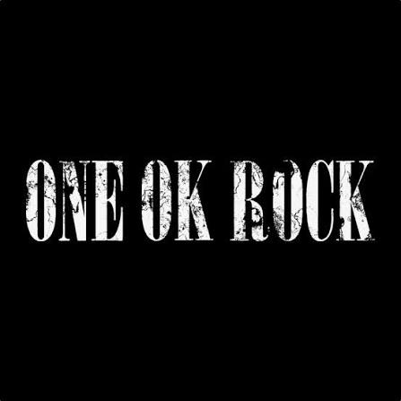

📖 我的入坑故事
第一次認真聽完〈The Beginning〉和〈Wherever you are〉時，最喜歡前奏鋪陳到副歌炸開的感覺，既有熱血衝勁也有深情一面，不知不覺歌單就全變成他們的歌了。

從 Live House 唱進世界舞台的四人樂團，用一場聽覺震撼告訴你：這個坑，聽過就回不來了。
如果你還沒聽過 ONE OK ROCK，一定是還沒聽過這五個理由：
第一次認真聽完〈The Beginning〉和〈Wherever you are〉時，最喜歡前奏鋪陳到副歌炸開的感覺，既有熱血衝勁也有深情一面，不知不覺歌單就全變成他們的歌了。
| 名次 | 歌曲 | 適合情境 |
|---|---|---|
| 🥇 | We are | 需要衝勁與自信的時候，代表曲之一 |
| 🥈 | Delusion:All | 感到孤獨不被理解時 |
| 🥉 | Vandalize | 時髦輕快、放鬆時聽 |
| 4 | Stand Out Fit In | 通勤路上、思考自我定位 |
點選你現在的心情狀態，幫你配一首最適合的 ONE OK ROCK 代表曲：
副歌的大合唱感與歌詞張力非常強大，適合在低潮或需要勇氣跨出下一步的時候大聲播放！
「We are, we are, the colors in the dark.」
第一次聽不知道從哪裡開始？照這張清單走就對了：
你被推坑成功了嗎？留下你的心得吧！（送出後會即時顯示在下方留言區）